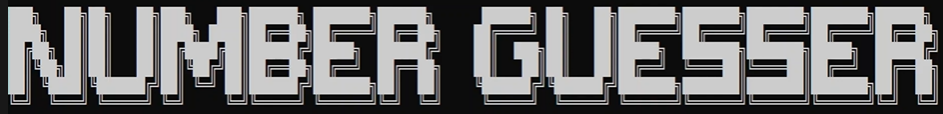

This is a tutorial to the "while-try-catch" command in C#
Goals
After this the reader should be able to code a program with while-try-catch.
Explanation for the "while", "if", "else if", "try-catch", commands
As long as while is true, the program will loop the code in the while braces.
while (x == 100) { // do something }
if checks whether a number or variable is the same as another or not.
if (x == 100) { // do something }
You can use else if, if the first if is false, to ask something else.
if (x < 100) { // do something } else if (x > 100) { // do something }
try-catch is to use if multible times and if none of the if statements are true, the program uses the catch.
As an example if you only want numbers, but the users input is a character.
try { if (x < 100) { // do something } else if (x > 100) { // do something } } // for example if the input is not a number catch { // do something }
Example of everything put together
Everything together could look like this example:
This is from my Number Guesser game.
You can look at the whole code here.
while (userGuess != randomNumber) { try { // this converts the input into an Int32 userGuess = Convert.ToInt32(Console.ReadLine()); // Input is above 100 if (userGuess > 100) { Console.WriteLine("Error input above 100"); } // Input is lower than 1 else if (userGuess < 1) { Console.WriteLine("Error input lower than 1"); } // Input is lower than the random number else if (userGuess > randomNumber) { Console.WriteLine("Too high"); } // Input is higher than the random number else if (userGuess < randomNumber) { Console.WriteLine("Too low"); } } // Input is not a number catch { Console.WriteLine("Error invalid input"); { userAttempts--; } } }
Video to my Number Guesser
Here is a link to a video of my Number Guesser because it uses while-try-catch.
It's in german so don't be confused.
(Click on the Image)
Verification and Reflection
I showed this to my brother and he understands it.
The project went good, but I had to re-write it once due to visual studio showing me weird errors.
Code
For just the code click here.
 Github
Github